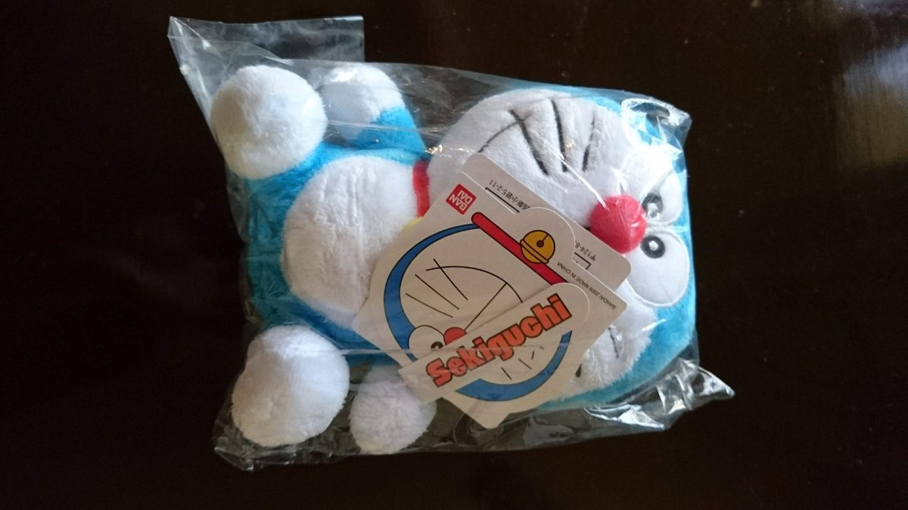
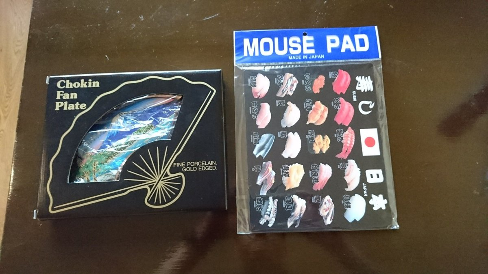

海外の友人や、旅先でお世話になる人へのおみやげ。せっかくなら日本らしくて、軽くて、割れにくいものを持って行きたいですよね。筆者は以前インドへ行ったとき、知人へのおみやげにドラえもんのぬいぐるみと、扇形の絵皿、寿司柄のマウスパッドを持って行きました。


そのときと同じ商品はいまは見つからなかったので、このページでは、いま通販で買える日本らしいおみやげを選びました。どれも楽天市場・Yahoo!ショッピングの販売先を、Amazonで買えるものはAmazonの販売先も載せています。
このページのおみやげ：ドラえもんのぬいぐるみ／富士山の手ぬぐい／赤富士のふろしき／お寿司の消しゴム／抹茶入り緑茶／北斎富士の飾扇子
おみやげ選びのポイント
荷物の重さには航空会社ごとに上限があります。布ものや小さな雑貨は軽くて割れないので、いくつ持って行っても安心です。
富士山、お寿司、アニメのキャラクターなど、説明しなくても日本らしさが伝わるものが喜ばれやすいです。
食べものや植物は、国によって持ち込みが禁止・制限されています。行き先のルールを先に確かめましょう。
いま買える日本らしいおみやげ


イワコー おもしろ消しゴム ブリスターパック お寿司（ER-961082）
いくら・いか・えび・うに・たまご・まぐろのお寿司の形をした消しゴムに、プラスチックの寿司ゲタが付いたセットです。販売ページの記載では日本製、重さは約82g。小さくて軽いので、子どものいる家庭へのおみやげや、ちょっとしたお礼にも。
出典：楽天市場・Yahoo!ショッピングの販売ページの記載、イワコー公式
Amazonでは、この商品をAmazonが販売しているページが見つからなかったため、楽天市場とYahoo!ショッピングの販売先を載せています。Yahoo!ショッピングの販売ページには「色・形・種類の取り合わせが変わることがある」と書かれています。
価格・在庫・送料は販売ページで確認してください。
Yahoo!で見る
白竹堂 飾扇子 北斎富士 黒塗 九寸五分（扇子立て・紙箱セット）
京都の扇子の老舗・白竹堂の、飾って楽しむ扇子です。販売ページ（白竹堂の公式店）の記載では、大きさは九寸五分（約28cm）、扇面は和紙、扇骨と扇子立ては竹で、日本・京都製。北斎の赤富士をイメージした柄に、金地に桜の花びらが舞います。筆者がインドへ持って行った扇形の絵皿のように、部屋に飾れるおみやげです。
出典：白竹堂の楽天市場店・Yahoo!ショッピング店の販売ページの記載
Amazonでは、白竹堂の公式の販売ページが見つからなかったため、楽天市場とYahoo!ショッピングの販売先を載せています。
価格・在庫・送料は販売ページで確認してください。
Yahoo!で見る

持って行く前に確かめたいこと
国際線の機内に持ち込む液体は、1つ100ml以下の容器に入れ、容量1L以下のジッパー付き透明袋にまとめます（1人1袋）。液体のおみやげは、預ける荷物に入れましょう。
国土交通省
外務省の安全対策基礎データでは、中国へは肉・魚とその加工品、乳製品、卵、果物・野菜など、動植物とその製品の持ち込みが原則禁止とされています。お茶のような食品は避け、布ものや雑貨を選ぶのが安心です。
外務省 海外安全ホームページ（中国）
外務省の安全対策基礎データでは、インドの税関ではX線検査が厳しく行われ、正確な申告が必要とされています。金や銀は少量でも持ち込みが禁止されているので、金属の飾りものは素材も確かめましょう。
外務省 海外安全ホームページ（インド）